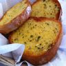
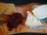
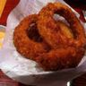
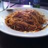
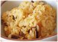
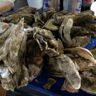

1.1 三個資料夾
第 0 章 0.4 節說過，資料解壓縮到 HW03/food11/，底下有三個資料夾。先數一數每個資料夾有幾個檔案、占多少空間（在 HW03/ 裡執行）：
$ for d in training validation test; do echo $d $(ls food11/$d | wc -l); done
$ du -sh food11/*training 9866
validation 3430
test 3347
245M food11/test
663M food11/training
260M food11/validation張數和投影片第 3 頁一致，三個資料夾裡全部是 .jpg。訓練集 663 MB、9,866 張，平均一張約 68 KB：這是 JPEG 壓縮過的大小，解碼成像素之後會大得多（第 2 章）。接著看檔名長什麼樣：
$ ls food11/training | head -5
$ ls food11/training | tail -2
$ ls food11/test | head -20_0.jpg «1»
0_1.jpg
0_10.jpg «2»
0_100.jpg
0_101.jpg
9_998.jpg
9_999.jpg
0001.jpg «3»
0002.jpg- 1訓練集與驗證集的檔名是
類別_序號.jpg：0_0.jpg是第 0 類的第 0 張。標籤就寫在檔名裡，資料集沒有另外附標籤檔。 - 2
0_10.jpg排在0_1.jpg後面、0_2.jpg前面：ls是照字串排序，一個字元一個字元比，不是照數字大小。程式裡的sorted也一樣（1.2 節）。 - 3測試集的檔名只有四位數的序號，沒有類別；而且序號補了零，所以字串順序剛好就是數字順序。這件事在第 5 章會變得很重要。
1.2 FoodDataset：檔名就是標籤
讀資料的程式全部在 dataset.py。第 1–3 行 import 了 os、PyTorch 的 Dataset 等類別，以及 Pillow 的 Image（Pillow 是 Python 最常用的影像套件，套件名叫 PIL）；第 6–9 行是從原版 notebook 帶過來的一段說明文字：「資料以名稱標示，所以在 __getitem__ 裡同時讀圖片和標籤」。接下來就是唯一的類別：
class FoodDataset(Dataset):
def __init__(self, path, tfm, files=None):
super(FoodDataset).__init__()
self.path = path
self.files = sorted([os.path.join(path, x) for x in os.listdir(path) if x.endswith(".jpg")])
if files is not None:
self.files = files
print(f"One {path} sample", self.files[0])
self.transform = tfm
def __len__(self):
return len(self.files)PyTorch 的 Dataset 只要求兩件事：__len__ 回答「一共幾筆」，__getitem__ 回答「第 idx 筆是什麼」。DataLoader（第 2 章）就是靠這兩個方法，一次拿一批索引、逐一呼叫 __getitem__，再把結果疊成一個 batch。
建構子有三個參數：path 是資料夾、tfm 是要套用的轉換（transform，第 2 章）、files 可以直接指定檔案清單。逐行看：
- 第 17 行：
os.listdir(path)列出資料夾裡的所有名字，留下.jpg結尾的，接上資料夾路徑，再sorted。排序是字串序，和 1.1 節的ls一樣。整個FoodDataset只存「檔名清單」，不會先把圖片讀進記憶體：9,866 張圖要等到被用到時才一張一張讀。 - 第 18–19 行：如果呼叫時給了
files，就用它取代第 17 行的結果。train.py:14的註解說ConcatDataset和Subset在做半監督學習（semi-supervised learning）時可能有用；files也是同一類的用途，例如把訓練集與驗證集合併後重新切分（第 8 章會用到）。要注意兩件事：第 17 行照樣會執行，所以path一定要是存在的資料夾；第 20 行印的是path，但旁邊的檔案已經是files裡的第一個（見下面的實測）。 - 第 20 行：印出第一個檔案，第 0 章 0.5 節那兩行
One ./food11/training sample …就是從這裡來的。 - 第 23–24 行：長度就是檔名清單的長度。
給了 files 時第 20 行印出來的樣子（在 HW03/ 裡執行，只給一個驗證集的檔案）：
One ./food11/training sample ./food11/validation/7_5.jpg前面寫的是 training，後面的檔案卻在 validation：印出來的訊息不一定代表實際讀的是哪個資料夾。
第 15 行的 super 少了 self
第 15 行 super(FoodDataset).__init__() 想呼叫父類別 Dataset 的建構子，但正確寫法是 super(FoodDataset, self).__init__()（或 Python 3 的 super().__init__()）。只給一個參數的 super(FoodDataset) 是一個「沒有綁定任何物件」的 super 物件，對它呼叫 __init__() 只是在初始化這個 super 物件自己，根本沒有碰到 Dataset。本書實測：在同樣的寫法裡印出 super(D)，得到 <super: <class 'D'>, NULL>，後面的 NULL 就是「沒有綁定物件」。
這個錯誤剛好沒有影響，因為 torch.utils.data.Dataset 沒有定義自己的 __init__（實測 Dataset.__init__ is object.__init__ 是 True），本來就沒有東西需要初始化。換成一個有自己建構子的父類別，同樣的寫法就會悄悄漏掉初始化。classifier.py:6 的 super(Classifier, self).__init__() 是對的寫法，可以對照；那一行如果寫錯，nn.Module 沒被初始化，第一次指定子模組（self.cnn = …）就會出錯。原版 notebook 就是這樣寫的，本 repo 沒有改。
接著是讀一筆資料的方法：
def __getitem__(self, idx):
fname = self.files[idx]
im = Image.open(fname)
im = self.transform(im)
# im = self.data[idx]
try:
# basename works on both linux ("/") and windows ("\\") paths
label = int(os.path.basename(fname).split("_")[0])
except:
# test has no label
label = -1
return im, label- 第 28 行：
Image.open打開 JPEG，得到一個 Pillow 的圖片物件。這一步只讀檔頭（知道大小與色彩模式），真正的解碼要等到第一次用到像素時才做。 - 第 29 行：套用建構子收到的轉換。
train.py傳的轉換會把圖片縮成 128×128 並變成 tensor（第 2 章）；第 30 行被註解掉的self.data[idx]是「先把所有圖片讀進記憶體」的另一種寫法，沒有用。 - 第 33 行：從路徑取出檔名（
os.path.basename）、用_切開、取第一段、轉成整數。./food11/training/3_120.jpg→3_120.jpg→["3", "120.jpg"]→"3"→3。 - 第 34–36 行：轉整數失敗就給 -1。1.6 節會看到，測試集就是靠這裡拿到 -1 的。
- 第 37 行：回傳一個
(圖片, 標籤)的 tuple。
用 FoodDataset 實際取一筆看看。這裡的 transform 只用 ToTensor()（把圖片變成 tensor，第 2 章），沒有縮放，所以看得到原圖大小。在 HW03/ 裡執行（不需要 GPU）：
$ ../.venv/bin/python -c "
from dataset import FoodDataset
import torchvision.transforms as T
ds = FoodDataset('./food11/training', tfm=T.ToTensor())
print(len(ds), ds.files[:3])
x, y = ds[0]
print(x.shape, x.dtype, y)
t = FoodDataset('./food11/test', tfm=T.ToTensor())
x, y = t[0]
print(x.shape, y)
"One ./food11/training sample ./food11/training/0_0.jpg
9866 ['./food11/training/0_0.jpg', './food11/training/0_1.jpg', './food11/training/0_10.jpg'] «1»
torch.Size([3, 512, 512]) torch.float32 0 «2»
One ./food11/test sample ./food11/test/0001.jpg
torch.Size([3, 384, 512]) -1 «3»- 19,866 個檔名，照字串排序，和
ls一致。路徑前面帶著./food11/training/，是第 17 行os.path.join接上的。 - 2第 0 筆是
0_0.jpg：3 個顏色通道、512 × 512 個像素，標籤 0。 - 3測試集第 0 筆是
0001.jpg：高 384、寬 512，和訓練集那張大小不同；標籤是 -1。大小不同的圖片沒辦法直接疊成一個 batch，所以train.py的轉換第一步就是縮放成固定大小（第 2 章）。
字串排序的類別順序
因為是字串排序，self.files 裡的類別順序不是 0, 1, 2, …, 10，而是 0, 10, 1, 2, 3, …, 9：比較 1_0.jpg 和 10_0.jpg 時，第一個字元都是 1，第二個字元 _（ASCII 95）比 0（ASCII 48）大，所以 10_… 排在前面。實測 10_0.jpg 在清單的第 994 個位置（0 起算，前面剛好是第 0 類的 994 張），1_0.jpg 在第 1,703 個（再加上第 10 類的 709 張）。
對訓練集來說這個順序無所謂，因為 train_loader 每個 epoch 都會打亂（第 2 章）。對測試集就很重要了：test.py 的預測是照 self.files 的順序產生的，submission.csv 的 Id 卻是照 1, 2, 3, … 編的；兩者對得上，全靠測試集的檔名補了零（第 5 章）。
1.3 改過的那一行：basename
第 33 行是本 repo 為了在 2026 年跑起來而改的地方。這一行在 git 紀錄裡有三個版本：
| 版本 | 寫法 | 能在哪裡跑 |
|---|---|---|
| 原版 notebook（2022） | int(fname.split("/")[-1].split("_")[0]) | Linux、macOS（Colab、Kaggle 都是 Linux） |
| 本 repo 改成 | int(fname.split("\\")[-1].split("_")[0])，旁邊註解 # windows | 只有 Windows |
commit 381aad0（2026-10-03） | int(os.path.basename(fname).split("_")[0]) | 兩邊都可以 |
關鍵在第 17 行的 os.path.join：它用的是目前作業系統的路徑分隔符號，Linux 上接出 ./food11/training/3_120.jpg，Windows 上接出 ./food11\training\3_120.jpg。手寫的 split("/") 或 split("\\") 都只認得其中一種。在 Linux 上用 Windows 版的寫法會怎樣？"./food11/training/3_120.jpg".split("\\") 找不到反斜線，切出來只有一段，[-1] 就是整個路徑；再用 _ 切，第一段是 ./food11/training/3，int() 失敗，except 給 -1。每一張訓練圖的標籤都變成 -1，而且不會有任何錯誤訊息——直到算 loss 的時候。本書在 CPU 上實測，把 -1 交給 nn.CrossEntropyLoss：
IndexError: Target -1 is out of bounds.標籤必須在 0 到 10 之間（11 類），-1 不合法。在 GPU 上，這類錯誤通常以 CUDA 的 device-side assert 出現，訊息比較難懂（本書沒有實際在 GPU 上跑這個寫法）。這就是 commit 381aad0 非改不可的原因。
os.path.basename 為什麼兩邊都行？因為 os.path 本身就跟著作業系統走：在 Linux 上它是 posixpath 模組，在 Windows 上是 ntpath。可以直接呼叫這兩個模組來比較：
$ ../.venv/bin/python -c "
import ntpath, posixpath
for p in ['food11/training/3_120.jpg', 'food11\\\\training\\\\3_120.jpg']:
print(repr(p), posixpath.basename(p), ntpath.basename(p))
"'food11/training/3_120.jpg' 3_120.jpg 3_120.jpg
'food11\\training\\3_120.jpg' food11\training\3_120.jpg 3_120.jpg «1»- 1Linux 的
posixpath.basename不認得反斜線，把整串當成一個檔名；Windows 的ntpath.basename兩種斜線都認得。（指令裡寫了四個反斜線，是因為 shell 的雙引號與 Python 字串各吃掉一層。）
所以第 32 行的註解「basename works on both linux ("/") and windows ("\\") paths」要多讀一層：它能用，是因為路徑由同一個作業系統的 os.path.join 產生、再由同一個作業系統的 os.path.basename 拆開。把 Windows 上產生的路徑字串拿到 Linux 上拆，一樣會失敗。
現在的做法：pathlib
Python 3.4 起的 pathlib 用物件表示路徑，Path("food11/training/3_120.jpg").stem 直接得到 "3_120"（去掉副檔名的檔名），Path(path).glob("*.jpg") 取代 os.listdir 加 endswith。另外，比賽級的資料通常會附一個標籤檔（CSV 或 JSON），或像 torchvision 的 ImageFolder 那樣「一個類別一個資料夾」，很少把標籤藏在檔名裡；這份資料的格式是課程自己定的。
1.4 11 類各有幾張
repo 和投影片都只說「11 類」，沒有寫每一類是什麼食物。類別名稱要看原始資料集：food-11 是瑞士洛桑聯邦理工學院（EPFL）多媒體訊號處理實驗室（MMSPG）發布的資料集，它的 11 類依序是下面這些（中文是本書的翻譯）。每類各放一張訓練集裡序號 0 的圖，縮成 96 像素見方：

麵包

乳製品
甜點
蛋

炸物
肉類

麵食

米飯

海鮮
湯
蔬果
本書目視比對過，這 11 張縮圖和類別名稱都對得上（第 0 類的 0_0.jpg 是一盤麵包、第 8 類的 8_0.jpg 是生蠔……）。程式完全不需要這些名字：對模型來說，類別就是 0 到 10 的整數。
每一類有幾張？用檔名的第一段來數：
$ ls food11/training | cut -d_ -f1 | sort | uniq -c 994 0
429 1
709 10
1500 2
986 3
848 4
1325 5
440 6
280 7
855 8
1500 9（sort 也是字串排序，所以 10 排在 1 和 2 之間。）畫成圖：
| 類別 | 訓練集 | 占訓練集 | 驗證集 | 驗證 ÷ 訓練 |
|---|---|---|---|---|
| 0 麵包 | 994 | 10.1% | 362 | 0.364 |
| 1 乳製品 | 429 | 4.3% | 144 | 0.336 |
| 2 甜點 | 1,500 | 15.2% | 500 | 0.333 |
| 3 蛋 | 986 | 10.0% | 327 | 0.332 |
| 4 炸物 | 848 | 8.6% | 326 | 0.384 |
| 5 肉類 | 1,325 | 13.4% | 449 | 0.339 |
| 6 麵食 | 440 | 4.5% | 147 | 0.334 |
| 7 米飯 | 280 | 2.8% | 96 | 0.343 |
| 8 海鮮 | 855 | 8.7% | 347 | 0.406 |
| 9 湯 | 1,500 | 15.2% | 500 | 0.333 |
| 10 蔬果 | 709 | 7.2% | 232 | 0.327 |
| 合計 | 9,866 | 100% | 3,430 | 0.348 |
三件事：
- 不平衡：最多的甜點和湯各 1,500 張，最少的米飯只有 280 張，相差 5.4 倍。模型看米飯的次數遠少於甜點，學得也可能比較差；第 0 章 0.6 節的
submission.csv裡，3,347 張測試圖只有 49 張被猜成米飯，是 11 類裡最少的（第 5 章）。 - 驗證集的比例和訓練集幾乎一樣：每一類的驗證張數大約是訓練張數的 1/3（0.327–0.406），所以驗證集的類別分布和訓練集相近，用它估計模型的表現是合理的。投影片第 15 頁說 train : validation 約 3 : 1，這裡實際是 9,866 : 3,430 ≈ 2.9 : 1。
- 最笨的基準：永遠猜最多的那一類（甜點或湯），在驗證集上答對 500 ÷ 3,430 = 0.14577。第 0 章的 0.555 遠高於它，模型確實學到了東西。
1.5 照片有多大
1.2 節的實測已經看到兩張大小不同的圖。全部數一遍（在 HW03/ 裡執行；Image.open 只讀檔頭，所以很快）：
$ ../.venv/bin/python -c "
import os, collections
from PIL import Image
c = collections.Counter()
for f in os.listdir('food11/training'):
with Image.open('food11/training/' + f) as im:
c[im.size] += 1
print(len(c), c.most_common(5))
"542 [((512, 512), 5551), ((512, 384), 1355), ((384, 512), 519), ((382, 512), 320), ((512, 382), 216)]Pillow 的 size 是 (寬, 高)，和 tensor 的 (通道, 高, 寬) 順序相反，讀的時候要小心。訓練集 9,866 張一共有 542 種不同的大小：
- 最常見的是 512×512 正方形，5,551 張；加上其他正方形尺寸，正方形一共 5,567 張，約 56%。
- 其次是 512×384 的橫圖（1,355 張）和 384×512 的直圖（519 張），也就是 4 : 3 的照片；382×512、512×382 這類是其他比例。大多數照片的長邊是 512。
- 兩個極端：最小的是訓練集的
7_24.jpg，270×207；最大的是驗證集的10_81.jpg，9216×6144，五千多萬個像素。訓練集裡最大的是10_445.jpg，7360×4912。
驗證集與測試集的分布很像：驗證集 251 種大小、2,111 張 512×512；測試集 244 種大小、1,978 張 512×512。全部三萬多張都是 RGB 三通道，沒有灰階或帶透明度的圖，所以 dataset.py 沒有寫 convert("RGB") 也不會出問題。
大小不一有兩個後果，都在第 2 章處理：第一，要疊成一個 batch，每張圖必須先縮成同樣大小，train.py 選了 128×128，不保留長寬比，512×384 的橫圖會被壓扁；第二，每次讀圖都要把 512×512 的 JPEG 解碼、再縮小，這件事很花 CPU 時間——第 0 章看到的 1723% CPU 使用率就是從這裡來的。
1.6 測試集的標籤：-1
測試集的檔名是 0001.jpg，沒有 _。第 33 行 "0001.jpg".split("_") 切不開，第一段就是整個 "0001.jpg"，int("0001.jpg") 失敗：
ValueError: invalid literal for int() with base 10: '0001.jpg'這個例外被第 34 行的 except: 接住，標籤變成 -1。所以同一個 FoodDataset 可以讀訓練集、驗證集和測試集，測試集的每一筆都帶著 -1，test.py 讀到之後直接丟掉（for data,_ in test_loader，第 5 章）。
第 34 行寫的是不帶例外類型的 except:，它會接住所有例外，不只是 ValueError。1.3 節的 Windows 寫法就是靠它「安靜地」把每張訓練圖都變成 -1：如果這裡寫成 except ValueError:，那個錯誤一樣不會被發現，因為它本來就是 ValueError。真正能早點發現問題的寫法，是依資料夾決定要不要取標籤（例如建構子多一個 has_label 參數），訓練集取不到標籤就直接報錯。
本章重點
food11/有三個資料夾：training 9,866 張（663 MB）、validation 3,430 張、test 3,347 張，全部是 RGB 的 JPEG。- 標籤寫在檔名裡：
類別_序號.jpg。FoodDataset只存排序後的檔名清單，__getitem__被呼叫時才讀圖、套轉換、從檔名取標籤。 sorted是字串排序，類別順序是 0, 10, 1, 2, …, 9；測試集的檔名補了零，字串順序等於數字順序。- 第 33 行的
os.path.basename是 commit381aad0改的；之前 Windows 版的split("\\")在 Linux 上會讓每張訓練圖的標籤都變成 -1，算 loss 時才出錯（IndexError: Target -1 is out of bounds.）。 - 11 類很不平衡：甜點、湯各 1,500 張，米飯 280 張；驗證集每類約是訓練集的 1/3。永遠猜最多的一類，驗證準確率 0.14577。類別名稱出自原始的 Food-11 資料集，repo 裡沒有。
- 訓練集有 542 種圖片大小，最常見 512×512（5,551 張）；Pillow 的
size是 (寬, 高)。 - 測試集檔名沒有
_，int()失敗，被except:接住而得到 -1。super(FoodDataset).__init__()少了self，剛好沒有影響。
自我測驗
1. 驗證集的 valid_set.files 第 0 個與最後一個檔案是什麼？第 10 類的第一個檔案 10_0.jpg 排在第幾個（0 起算）？
字串排序下，第 0 個是 ./food11/validation/0_0.jpg（第 0 章 0.5 節 stdout 的第二行就是它）。第 10 類緊接在第 0 類之後，驗證集第 0 類有 362 張，0_… 開頭的字串都比 1… 小，所以 10_0.jpg 排在第 362 個。最後一個是第 9 類裡字串最大的序號：第 9 類有 500 張（序號 0–499），字串比較時 9_99.jpg 比 9_499.jpg 大（第三個字元 9 大於 4），所以最後一個是 9_99.jpg。本書實測：第 0 個 0_0.jpg、最後一個 9_99.jpg、10_0.jpg 在第 362 個，和推論一致。
2. 如果把 dataset.py:33 改回原版的 fname.split("/")[-1].split("_")[0]，在 Linux 上會怎樣？在 Windows 上呢？
Linux 上沒問題：os.path.join 接出來的是 ./food11/training/3_120.jpg，用 / 切取最後一段就是檔名。Windows 上，os.path.join 接出 ./food11\training\3_120.jpg，用 / 切得到 ["." , "food11\training\3_120.jpg"]，最後一段再用 _ 切，第一段是 food11\training\3，int() 失敗，標籤全部變成 -1，算 loss 時出錯。（Windows 的部分是推論，本書沒有在 Windows 上跑。）
3. 一張 512×384 的橫圖，Image.open 之後 im.size 是什麼？經過 ToTensor() 之後的 shape 是什麼？
im.size 是 (512, 384)，寬在前。ToTensor() 之後是 torch.Size([3, 384, 512])，通道在前、然後是高、寬——1.2 節測試集的 0001.jpg 就是這個形狀。
4. 為什麼「永遠猜甜點」在驗證集上只有 0.14577，但第 0 章第 1 個 epoch 的驗證準確率 0.17568 也沒高多少？這代表第 1 個 epoch 的模型很爛嗎？
0.14577 是 500 ÷ 3,430，最多的一類只占 14.6%，所以 11 類的分類問題裡，「什麼都沒學會」大約就在這個水準。第 1 個 epoch 的 0.17568 只比它高一點，表示這時候用 eval 模式評估的模型幾乎還沒學會區分類別；但同一個 epoch 的訓練準確率已經是 0.31425，兩者差很多。為什麼 train 與 eval 的數字會差這麼多，第 3、4 章會講 BatchNorm 在兩種模式下的差別。第 2 個 epoch 驗證準確率就到了 0.43092。
5. 想把訓練集與驗證集合併，再隨機切出新的 90% / 10%，用 FoodDataset 的哪個參數最方便？要注意什麼？
用 files：自己把兩個資料夾的檔名清單合併、打亂、切開，再建兩個 FoodDataset，各給一份 files。要注意 path 仍然要給一個存在的資料夾（第 17 行照樣會 os.listdir），而且第 20 行印出的 path 不代表實際的檔案來源；另外驗證用的那一份要給 test_tfm，不要給有增強的轉換。第 8 章的「重切 train/val」實驗就是這樣做的（只是比例不同）。
延伸閱讀
- EPFL MMSPG — Food image datasets：Food-11 原始資料集的發布頁，有 11 類的名稱與資料來源。
- PyTorch — torch.utils.data：
Dataset、DataLoader、ConcatDataset、Subset的官方說明。 - Pillow — Image module：
Image.open為什麼是「懶惰」的、size與mode的定義。 - Python — pathlib：用物件處理路徑，跨平台不必自己切斜線。
- Python — super()：一個參數與兩個參數的
super有什麼不同。